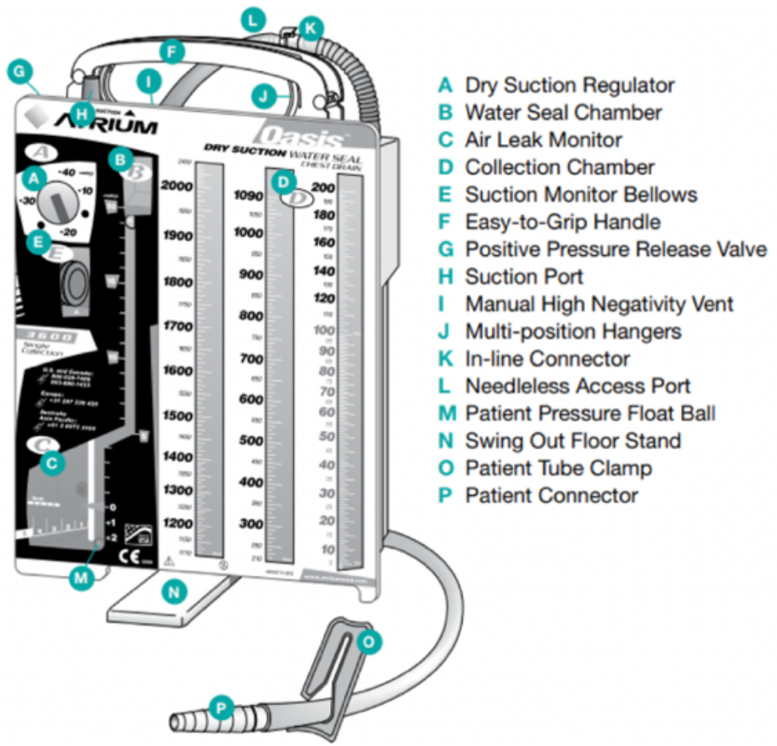

Chest Tubes¶
Pakinam Mekki
Background¶
- Nomenclature: Small bore chest tubes= Pigtail Catheters (Often 8-12 Fr) placed via Seldinger technique. “Chest Tube” technically denotes a large bore, surgical thoracostomy tube (Often 24-40 Fr)
- Indications: Pneumothorax, hemothorax (more often surgical chest tubes), empyema, malignant effusion (patient specific), chylothorax, penetrating chest trauma
- Contraindications: No absolute contraindications. Relative contraindications include hepatic hydrothorax, large emphysematous blebs, and anticoagulation or coagulopathy
Procedure¶
- Consult pulmonology for patients who may need pigtail chest tube
- Placement and Sizing
- The location and size of the chest tube is related to the pathology
- Pneumothorax anterior near the apex of the lung in the 2nd intercostal space, midaxillary line
- Fluid (water, pus, blood), posterior near the base of the lung (fifth or sixth intercostal space, midaxillary line
- Hemothorax surgical chest tube is placed to prevent clot formation
- Potential complications: Laceration of an intercostal vessel, organ perforation (lung, heart, diaphragm, intraabdominal), trauma of the intercostal neurovascular bundle, subcutaneous emphysema, pneumothorax, infection, re-expansion pulmonary edema.
- Smaller size results in less tissue disruption but more likely to clog or kink
Understanding the Atrium¶
After the chest tube is placed, it is connected to the Atrium which can be connected to the wall for suction. (See Diagram below)

Atrium Diagram
- (A) Dry suction control - determines the level of suction out of the chest tube and is set by the provider. It is important to note that while the atrium is linked to the wall suction via suction port (F) the level of wall suction is determined by (A)
- (B) Water seal chamber - if the atrium is disconnected from the wall suction, it is on “water seal” (i.e., to gravity). This allows for the one-way flow of pleural space contents out of the chest.
- (C) Air leak monitor - if air bubbles are present in the water seal chamber, then that indicates the presence of air in the pleural space. The presence of air is different from normal “tidaling,” within the water seal and requires troubleshooting (see below). Tidaling is normal; it is the movement with respiratory variation in water seal chamber. The water should rise with inspiration and fall with expiration.
- (D) Collection chamber - drains the pleural fluid contents via the chest tube.
- (E) Suction verification window - will be orange if suction is on and atrium is functioning appropriately
Troubleshooting¶
- Air leaks: If bubbles are present in the water seal chamber, this indicates air in the pleural space. This is an expected finding in a pneumothorax; over time, the air leak should disappear as the lung re-expands. This contrasts with normal tidaling present with respiratory variation
- There are two major causes of air leaks:
- Persistent air in the pleural space, seen in alveolar-pleural fistula or pneumothorax (new or old)
- Leak in the chest tubing at its insertion site or in the tubing system. To identify the etiology of a new air leak, try clamping the chest tube at various points, obtain a CXR
- Clogging: Would see debris in the collection chamber and lack of tidaling in the water seal camber
- In patients with viscous fluid output (ex- empyema), important to flush the chest tube with normal saline flushes at least twice daily to prevent clogging
- For clog - try flushing 10cc of sterile saline toward the pt or “stripping” the chest tube by pressing the chest tube with your fingers and pulling towards the drainage system.
- May require tPA or dornase for fibrinolysis, discuss with team that placed the tube
Chest tube removal¶
- Generally, chest tubes are removed when there is \< 150cc of drainage in 24 hrs (if placed for pleural effusion)
- For pneumothorax, there is typically a step-wise approach to removal. The team that placed the chest tube will guide removal
- Suctionwater seal ± clamp trial. CXR obtain after each transition to monitor for reaccumulation
- Chest tube should be removed while patient hums (to prevent inhalation during removal that could introduce air into pleural space). Pigtail catheters have to be “unlocked” prior to removal to release the pigtail
Last update:
2022-07-05 14:41:01